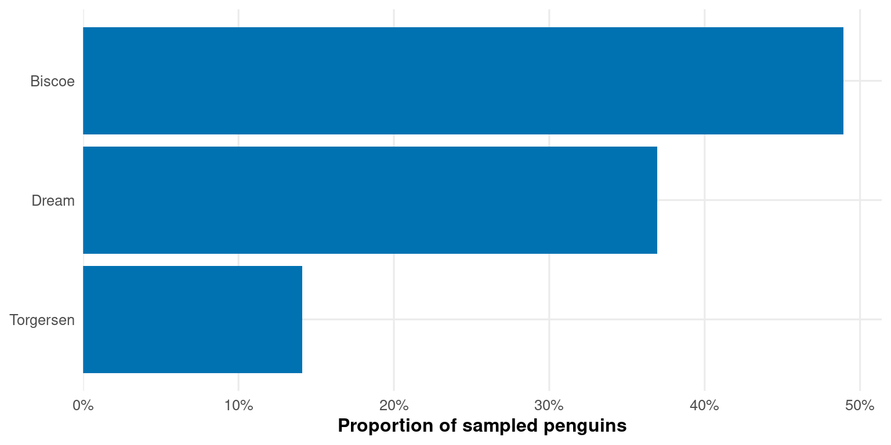

Two foundational pieces of ggplot2 sit between the figure construction and the figure looking the way you want: themes (how the non-data elements appear) and scales (how the data axes are formatted). Mastery of both transforms what your figures look like without changing what they show. This block establishes the patterns we will then use throughout Block 4.
Themes
A complete theme controls every non-data visual element: panel backgrounds, gridlines, text styling, axis ticks, margins, legend appearance. ggplot2 ships several complete themes; we have already used theme_minimal() in earlier examples. The ones worth knowing:
Theme
When to use
theme_minimal()
Default for most figures. Clean panel, retained gridlines, no panel border.
theme_classic()
Traditional scientific look. Axis lines, no gridlines, no panel border.
theme_bw()
Black-and-white panel with thin border and gridlines.
theme_void()
Strip everything. Useful for maps and bespoke composed layouts.
theme_grey()
The ggplot2 default. Do not use this. The grey panel background fails the data-ink test.
The base_size argument sets the text size for every text element in the figure proportionally. Setting theme_minimal(base_size = 12) once is preferable to setting axis.text = element_text(size = 12) and twelve similar lines: every text element will scale together when you change base_size for a different audience.
Local modifications with theme()
The theme() function makes local modifications on top of any complete theme. Inside theme(), every named argument is a visual element of the figure and takes an element_*() function:
element_text() for text elements (titles, axis labels, legend text)
element_rect() for rectangular backgrounds (panel, plot, legend, strip)
element_line() for lines (gridlines, axis lines, tick marks)
The rel() function sets a size relative to base_size. rel(1.2) means “1.2 times the base text size”, which adjusts automatically when you change base_size. Use rel() for any text size you set inside theme(); use absolute sizes only when you need to override the relationship.
A project theme function
If you make the same theme modifications in every script, wrap them in a function. This is what the pub-figures skill refers to as theme_project():
Now every figure in the project uses theme_project() and changes to your house style propagate everywhere without editing individual scripts. Save the function in R/functions/plot_functions.R and source it at the top of any script that produces figures.
Theme demonstration: same data, four themes
The case for moving away from theme_grey() is more persuasive shown than argued. The figure below renders the same scatter plot four times: once with the ggplot2 default, once with theme_minimal(), once with theme_classic(), and once with our custom theme_project(). Look at each in turn and ask which one most clearly serves the data.
Reflection — Tufte’s data-ink ratio. Edward Tufte (1983) proposed that the ratio of data-ink to total-ink in a figure should be high: most of the visible pixels should encode data, not decoration. Look at the four panels above and ask, for each one, which visual elements carry information about the data, and which are just visual noise. The grey background panel of theme_grey() does not encode anything; the panel border in some themes does not encode anything; the minor gridlines may or may not, depending on whether the reader is reading off precise values. Polish is a discipline. The discipline is to remove anything that does not encode data, until removing more would damage readability.
The theme_project() panel is the most restrained of the four; it removes the grey background, the minor gridlines, and the legend at the top-right; bolds the axis titles for slight emphasis; and places the legend below the panel where it does not compete with the data for the reader’s primary axis of attention. Each of these choices is defensible against the data-ink principle.
Audience-appropriate base_size
The audience matrix in Block 2 specified base font sizes for different reading contexts. Translated into theme_project() calls:
Audience
base_size argument
Journal / lab report
theme_project(base_size = 12) (floor)
Conference poster
theme_project(base_size = 18)
Seminar talk
theme_project(base_size = 16)
Public engagement
theme_project(base_size = 16)
Warning
Setting individual text element sizes (axis.text = element_text(size = 14)) without adjusting base_size leaves other text elements at the default. The result is a figure with mismatched text sizes that looks unbalanced. Always change base_size first; tweak individual elements only as deliberate exceptions.
Scales
Where themes control the non-data parts of the figure, scales control how the data axes are rendered. Axes are position encodings, the most accurate visual channel in the encoding hierarchy from Block 1 — yet the breaks and labels chosen by ggplot2 by default often undermine that accuracy by placing ticks at awkward intervals or formatting numbers in ways that obscure them. The scales package gives you the tools to fix this.
penguins_complete |>ggplot(aes(x = body_mass_g)) +geom_histogram(bins =30, fill ="#0072B2", colour ="white") +scale_x_continuous(breaks = scales::breaks_pretty(n =6) ) +scale_y_continuous(breaks = scales::breaks_pretty(n =5),expand =expansion(mult =c(0, 0.05)) ) +labs(x ="Body mass (g)", y ="Count") +theme_project()
The expansion(mult = c(0, 0.05)) argument adds no padding at the bottom (so bars sit on the axis) and 5% padding at the top (so the tallest bar does not touch the upper edge). This is the convention for bar charts and histograms.
Label functions
Number formatting matters. Thousands separators, percentage signs, properly formatted p-values, and currency prefixes are all small touches that distinguish a polished figure from a draft. The scales package provides label functions for each:
penguins_complete |>count(island) |>mutate(prop = n /sum(n)) |>ggplot(aes(x =fct_reorder(island, prop), y = prop)) +geom_col(fill ="#0072B2") +scale_y_continuous(breaks = scales::breaks_pretty(n =5),labels = scales::label_percent(accuracy =1),expand =expansion(mult =c(0, 0.05)) ) +labs(x =NULL, y ="Proportion of sampled penguins") +theme_project() +coord_flip()

Two improvements over the default: y-axis labels render as 30% rather than 0.3, and the breaks sit at sensible round percentages rather than at arbitrary values like 0.275. Both changes happen entirely in the scale_* call; the data are not modified.
Demonstration: before and after
The cumulative effect of theme and scale choices is easier to see than to describe. The figure below shows the same data twice — first with ggplot2 defaults, then with theme_project() and scales::label_*() applied. The data are identical; only the styling has changed.
base_data <- penguins_complete |>count(island) |>mutate(prop = n /sum(n))p_default <- base_data |>ggplot(aes(x = island, y = prop)) +geom_col() +labs(x ="Island", y ="prop", title ="Default theme and scales")p_improved <- base_data |>ggplot(aes(x =fct_reorder(island, prop), y = prop)) +geom_col(fill ="#0072B2") +scale_y_continuous(breaks = scales::breaks_pretty(n =5),labels = scales::label_percent(accuracy =1),expand =expansion(mult =c(0, 0.05)) ) +labs(x =NULL, y ="Proportion of sampled penguins",title ="theme_project() and scales::label_percent()") +theme_project()p_default + p_improved
Three concrete changes between the panels: the y-axis labels render as percentages, the bars are ordered (by fct_reorder) rather than alphabetical, and the grey panel background is gone. The data-ink ratio has improved without altering a single number.
Log scales
When a variable spans more than two orders of magnitude, transform to log. The scales package handles both breaks and labels:
label_log() formats the labels as 10^1, 10^2, and so on — the proper notation for log-scaled data. The figure should also state the log transformation in either the axis title or the legend so the reader does not misread the scale as linear.
Note
Why this matters. A figure built with theme_project() and properly formatted scales::label_*() functions reads as professionally produced even if the underlying analysis is straightforward. A figure with theme_grey() and default axis labels reads as a draft even if the analysis is sophisticated. Polish is a discipline, not an embellishment.
Note
Break (15 minutes). Energy is high after the participatory exercises in Blocks 1 and 2 and the coding-focused Block 3. The remaining blocks are coding-heavy and benefit from fresh attention.